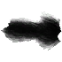

Шкура черного волка
Предметы / С врагов
Открыть в интерактивной вики →
| Вес | 15 |
|---|---|
| Цена | 340 |
Описание
Требуется для выполнения различных задач в Алариле.
| - |
Дроп
Применение
|
Как добыть
Получаем за победу над:
|

Открыть в интерактивной вики →
| Вес | 15 |
|---|---|
| Цена | 340 |
| - |
|
Получаем за победу над:
|